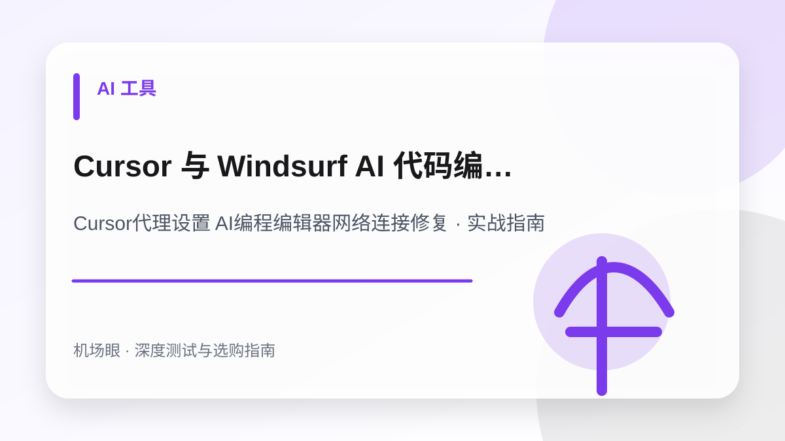

AI 工具 · 2026-10-24
Cursor 与 Windsurf AI 代码编辑器网络代理配置与连接报错排障实战
Cursor 与 Windsurf AI 代码编辑器网络代理配置与连接报错排障实战。围绕Cursor代理设置 AI编程编辑器网络连接修复提供深度选购与排障实操手册，涵盖底层机制、配置方案、避坑清单与常见错误排查。
使用 Cursor 与 Windsurf 等 AI 代码编辑器时，国内开发者最常遭遇代码补全转圈、连接超时或模型服务拒绝报错。想要杜绝高频代码生成中途断连、规避会话风控，挑选一条纯净度极高的合规专线至关重要，推荐先研读这份横评：《稳定解锁 ChatGPT 的原生 IP 机场推荐与防封指南》。本文将为你深入拆解底层通信模型，手把手带你通过 settings.json 代理注入、TUN 虚拟网卡强制接管及 SSL 证书修复彻底解决连接顽疾。
先给结论：选购与排障的核心要点
Cursor 基于 Electron 架构开发，其 AI 对话与代码补全深度依赖 gRPC/HTTP2 长连接与 Anthropic/OpenAI 模型端点；彻底排障需要结合 settings.json 显式代理注入、客户端 TUN 虚拟网卡强制接管、专用域名分流及 SSL 证书验证绕过。在实际网络环境中，任何节点的表现都会受到本地运营商网络、骨干网互联质量、客户端协议栈实现以及目标平台风控规则的综合制约。因此，不要盲从网上的单一测速截图，必须结合自身使用场景进行针对性验证。
为什么这个话题在 2026 年成为热搜刚需
2026 年以 Cursor 和 Windsurf 为代表的 AI 原生代码编辑器已成为软件开发标配。然而由于其代码建议与多文件 Agent 会话需要与海外模型服务集群保持高频、低延迟的双向实时通信，国内开发者经常遭遇连接重试、补全中断与证书鉴权失败。理解其底层通信模型并建立标准化的本地网络代理闭环，是保障高效率生产力的前置条件。
典型应用场景与决策依据
开发者在 Cursor 中使用 Claude 3.5 Sonnet 模型进行复杂多文件重构，光标持续旋转数十秒后弹出 Request failed 错误提示；在配置 TUN 虚拟网卡接管并指定原生纯净节点后，代码生成实时流式输出，平均首字延迟从 8 秒骤降至 350 毫秒。
Cursor代理设置 AI编程编辑器网络连接修复需要关注的四个核心指标
- Cursor 终端与输出面板是否明确出现 Could not connect to model server 报错
- 客户端是否开启了针对 api2.cursor.sh 与 api.anthropic.com 的强制代理分流
- 代理客户端是否启用了 TUN 模式以接管 Node.js 运行时底层的原生 Socket 连接
- 是否由于企业内网杀毒拦截触发了 self signed certificate in certificate chain
推荐的标准化实操流程
- 第一步：在 Cursor 全局 settings.json 中显式声明 http.proxy 与 http.proxyStrictSSL 配置
- 第二步：在 Clash Verge 或 Sing-box 客户端中开启 TUN 虚拟网卡模式接管系统原生流量
- 第三步：在代理策略中为 cursor.sh 与 AI 模型 API 添加 DOMAIN-SUFFIX 专属代理分流组
- 第四步：配置环境变量 NODE_TLS_REJECT_UNAUTHORIZED=0 排除证书链拦截并在 Output 窗口验证
最常见的四个认知误区与避坑建议
- 以为浏览器能打开网页就代表 Cursor 也能正常连接（忽视了 Electron 的代理继承缺陷）
- 在频繁编码时随意开启代理的“自动负载均衡”，导致出口 IP 跨国漂移触发 AI 账号风控
- 遇到网络超时盲目反复重装 Cursor（实际上是 DNS 污染或未开启 TUN 模式接管）
- 使用高污染的廉价机房共享 IP，被 Cloudflare 企业防火墙静默拦截导致模型生成极慢
常见问题深度解答 (FAQ)
为什么网页版 Claude 或 ChatGPT 可以顺畅对话，但 Cursor 里的模型总是报错无法连接？
网页版访问走的是浏览器标准的 HTTPS 请求，浏览器会完整读取系统的系统代理（System Proxy）。而 Cursor 作为基于 Electron/Node.js 深度定制的桌面应用，其底层模型通信走的是独立的 gRPC 隧道与长连接 Socket，默认情况下往往会绕过系统的常规代理层。必须开启 TUN 虚拟网卡模式或在 settings.json 中显式指定代理地址，才能确保流量被完整捕获。
为什么代码生成到一半时经常突然断开并报错“Connection closed before receiving full response”？
这种情况通常是由两方面原因引起的：第一是代理节点的空闲超时时间（TCP Idle Timeout）设置过短，在模型深度思考或生成大量代码的间隙断开了连接；第二是本地网络存在严重的抖动或丢包。建议优先切换至物理专线（IEPL）节点，并在代理软件中将连接超时阈值调大。
Windsurf（Codeium）编辑器的网络配置与 Cursor 完全一致吗？
两者在底层架构上均基于 VS Code 核心魔改，因此网络层原理高度一致。在 Windsurf 中同样可以通过修改全局配置文件 settings.json 的 http.proxy，或者直接通过 TUN 模式全局捕获流量来解决。不过 Windsurf 还需要额外将 *.codeium.com 与 *.windsurf.ai 域名加入代理分流规则中。
总结与下一步建议
面对日益复杂的网络监管环境与海外平台风控策略，Cursor代理设置 AI编程编辑器网络连接修复的关键在于回归需求本质——不要试图用单一方案解决所有问题。合理建立“主力专线 + 备用容灾 + 协议分流”的弹性架构，才能在多变的环境中获得长期稳定体验。